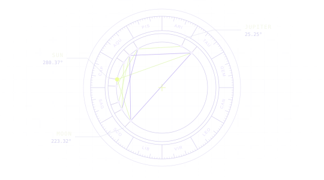

Featured project2026

Aspicio - Third year as a software engineer
Cast a chart for a moment in time. Start with Greenwich at noon on January 1, 2000.
Open the sample chartSeattle, Washington
Software engineer
I build healthcare software at CVS Health and created Aspicio, an astrology platform for exploring charts, the night sky, and places.

Cast a chart for a moment in time. Start with Greenwich at noon on January 1, 2000.
Open the sample chart2021 — 2026
From a browser game utility to data services, desktop tools, and Aspicio.
A randomizer for League of Legends. Choose a map, filter the available spells, and roll a pair for your next match.
A city lookup that turns a weather API response into a saved observation. A server-rendered table lets you look back through earlier searches.
Browse sourceAn early chatbot built around OpenAI's text-davinci-002 completion model. The Vue client shows how I connected a conversational interface to a language model API.
Browse sourceA service for a library catalog. Book and author endpoints expose the relationships in a PostgreSQL database, with Knex migrations to reproduce the schema.
Browse sourceContributed the social sign-in interface and Google and Facebook sign-in logic to a team storefront project.
See my contributionA command-line prototype that recursively scans a music folder and indexes MP3 titles and artists. It reads both ID3v1 and ID3v2 metadata.
Browse sourceA birth chart, a 3D sky, and a map offer three ways to explore planetary positions. Aspicio uses NASA JPL ephemeris data for its calculations and a rules engine to compose readings.
The chart plots bodies and aspects for a time and place. The sky puts those bodies among the stars. The Places map lets you move the location and explore how a relocation chart changes.
A desktop utility that changes Spotify's local preferences to restore the classic lyrics view. Users can inspect diagnostics and undo the change.
CVS Health
Built a self-service metrics dashboard that let users export data independently.
Built appointment availability and provider ranking features. Cut one appointment test group from 185 seconds to 6 seconds and migrated CI for 10 services to GitHub Actions.
Unified logging, tracing, and session visualization across seven agent services. Reorganized responses around parallel specialist services and reduced welcome-response latency by roughly 16.5 seconds.